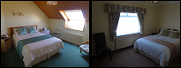

|
Wer sind wir?
Cois Farraige ist ein familiengeführtes Bed & Breakfast in einer ruhigen, landschaftlich reizvollen Gegend nur 1 km von der Lage
Zentrum der Stadt Lahinch.
Alle Zimmer mit Bad und kostenfreies WLAN im gesamten Haus mit eine schöne Aussicht auf das Meer aus dem Esszimmer.
Großes Familienzimmer availible welche Platz für bis zu 5 Personen und Babybetten availible auf Anfrage.
Preise
Die Preise sind €35.00 pro Person im Doppelzimmer für Juli und August und €30.00 um €32.50 pro Person im Doppelzimmer für alle anderen Monate. Kinder im Zimmer haben 50% Ermäßigung. Single ist €45.00
Lokale Sehenswürdigkeiten
Lahinch ist ein kleines und freundliches Dorf am Meer, berühmt für seine langen Sandstrand und tolle Surfen. Weitere Attraktionen sind eine Strähne Promenade, Aquarium und Schwimmbad und eine Vielzahl von guten Restaurants und Cafes.
Lahinch bietet auch viele andere Aktivitäten. Golfer können zwischen zwei Kursen wählen Links bietet die Atlantikküste großes Fischen für Angler und Surfer sollten exzellente Bedingungen in einem der vielen tollen Surfspots finden.
All dies macht Cois Farraige ist der ideale Ausgangspunkt für einen Besuch lokalen Sehenswürdigkeiten, wie:
Lahinch Glof Club: www.lahinchgolf.com
Cliffs of Moher: www.cliffsofmoher.ie
Der Burren: www.theburrencentre.ie
Doolin Cave: www.doolincave.ie
Aillwee Cave: www.aillweecave.ie
und viele mehr.
Wie kann ich buchen
Um eine Buchung mit uns zu machen, können Sie einfach per E-Mail durch rosie@coisfarraige.net
Oder rufen Sie uns an (353) 065 7081 580
Wo sind wir?
Wir sind auf dem Miltown Malby Straße direkt am Meer gelegen, wie Sie aus Lahinch kommen in Richtung Miltown. Diese Straße ist als die N67 auf Karten markiert.
|
|
Kontaktieren Sie uns
Phone: (353) 065 7081580
Email: rosie@coisfarraige.net
Address: Cregg, Lahinch, Co.Clare, Ireland
Bilder

|